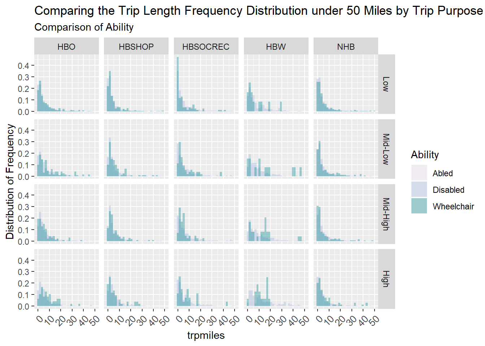

Trip Length
Nate Lant
# Add hhpersonid to nhts_trips
nhts_trips <- nhts_trips %>% mutate(hhpersonid = paste(houseid, personid, sep = "-"),
trpmiles = as.double(trpmiles))
# Join persons_edited file from Demographics.Rmd with trips
read_rds("R/edited_persons.rds") %>%
left_join(nhts_trips %>% select(hhpersonid, trpmiles, trippurp, trptrans, trvlcmin, psgr_flg),
by = "hhpersonid") %>%
filter(trptrans > 0) %>%
write_rds("R/persons_trips.rds")
# Store persons_trips as .rds
persons_trips <- read_rds("R/persons_trips.rds")Summary of Trip Length in Miles By Ability Ages 18-64
# Summary
persons_trips %>%
filter(trpmiles > 0) %>%
group_by(Ability) %>%
summarise(Mean = mean(trpmiles),
Median = median(trpmiles),
Max = max(trpmiles)) %>%
pander()| Ability | Mean | Median | Max |
|---|---|---|---|
| Abled | 12.48 | 3.826 | 8701 |
| Disabled | 8.951 | 2.788 | 3677 |
| Wheelchair | 12.83 | 3.156 | 1396 |
# nhts_persons is still filtered by Age
persons_trips %>%
filter(trpmiles < 50,
trpmiles > 0,
trippurp != -9) %>%
# Grid violin plot
ggplot(aes(x = Ability, y = trpmiles, fill = Ability)) + geom_violin() +
geom_boxplot(width=0.1, fill = "white") +
facet_grid(Income ~ trippurp, scales = "free_x") +
ggtitle("Comparing the Trip Length under 50 Miles by Trip Purpose and Income Group", subtitle = "Comparison of Ability Ages 18-24") +
labs( y = "Lenth of Trip in Miles") +
scale_fill_brewer(palette = "PuBuGn", direction = 1) +
theme(axis.text.x = element_text(size = 10,
angle = 45,
hjust = 1,
vjust = 1))
Trip Length Frequency Distribution
persons_trips %>%
filter(trpmiles < 50,
trpmiles > 0,
trippurp != -9) %>%
ggplot(aes(x = trpmiles, fill = Ability)) + geom_histogram(aes(y = stat(width*density)), alpha = 0.4, position = "identity") +
facet_grid(Income ~ trippurp) +
ggtitle("Comparing the Trip Length Frequency Distribution under 50 Miles by Trip Purpose and Income group Ages 18-24", subtitle = "Comparison of Ability") +
labs( y = "Distribution of Frequency") +
scale_fill_brewer(palette = "PuBuGn", direction = 1) +
theme(axis.text.x = element_text(size = 10,
angle = 45,
hjust = 1,
vjust = 1))